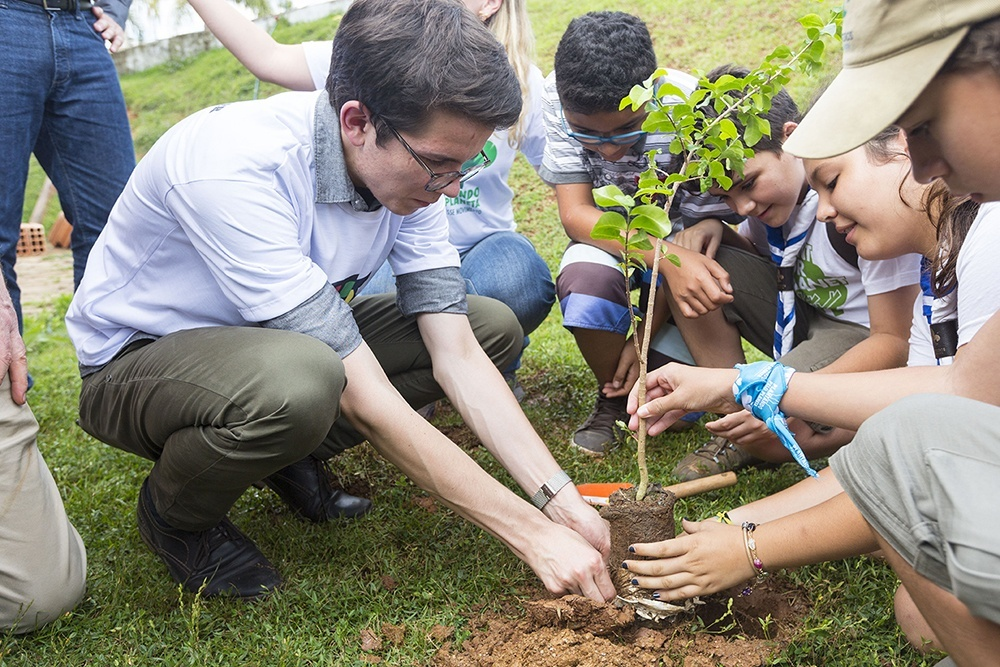

A 4Elements, liderada por um grupo de visionários que acreditam que é possível transformar a situação atual
em um futuro sustentável.
Estabelecemos uma fábrica de reciclagem.
O intuito da 4Elements é ajudar tanto o meio ambiente quando as pessoas, nós precisamos dele e infelizmente ele vem correndo um grande risco, ultimamente o lixo só vem aumentando junto do desmatamento e da poluição, então para melhorar a situação da cidade de São Paulo, foi contratada uma equipe para a recolha do lixo reciclável, pessoas para limpeza de águas e de plantio, melhorando assim uma qualidade de vida.
Por conta disso, a empresa logo se tornou um símbolo de esperança para a comunidade de São Paulo. Os moradores começaram a trazer
seus resíduos recicláveis para a 4Elements, onde eram recebidos com sorrisos calorosos e gratidão. Implementamos
um sistema de recompensas, incentivando as pessoas a reciclar mais, oferecendo descontos em produtos e serviços
sustentáveis.
Além disso, organizamos vários dias no mês para eventos como coleta na porta de casa, palestras de
conscientização e dias de plantação de novas árvores, contamos com seu apoio para continuarmos o projeto e aumentar
a qualidade de vida da população